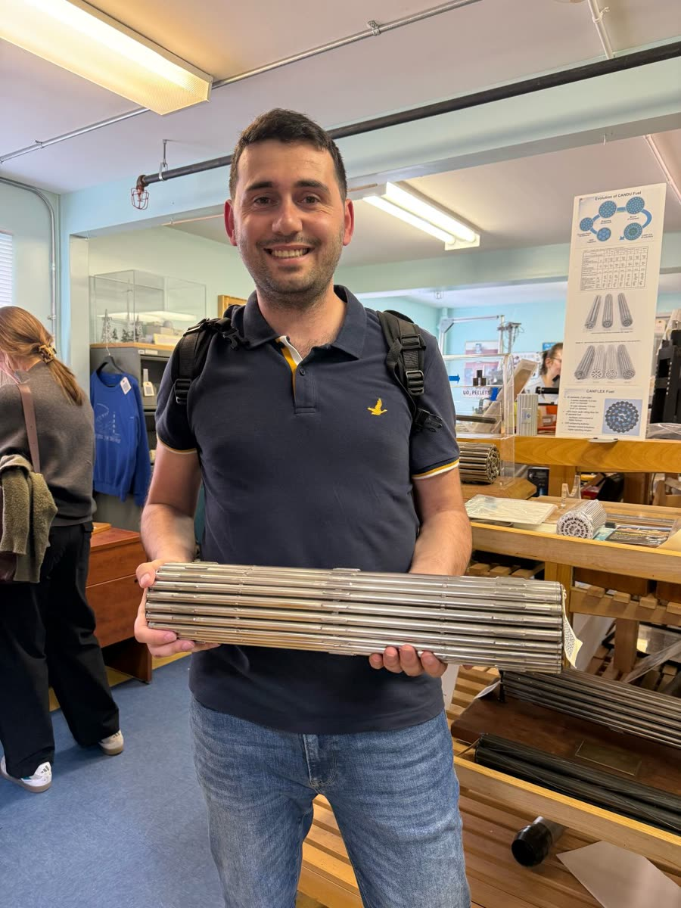
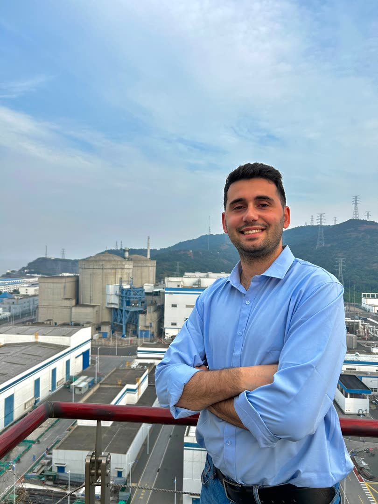

Research visits, conferences & project work
Nuclear field experience
Based at Ontario Tech University, I work across nuclear engineering and industrial cybersecurity. My recent work includes a graduate visit to Chalk River Laboratories and a research paper on the IEEE ACSAC workshop program in Los Angeles.
Graduate visit / Ontario, Canada / 2026
Chalk River Laboratories
I visited Chalk River Laboratories through Ontario Tech University's Graduate Immersive Experience. The program introduced me to Canadian nuclear research, including CANDU systems, nuclear fuels, and work in cybersecurity and machine learning.
The visit also included the Canadian Nuclear Heritage Museum in Deep River, where I got a close look at an exhibit of CANDU fuel.

Research program / Los Angeles, USA / 2026
IEEE ACSAC: Industrial Control System Security
Our Ontario Tech paper, Recording-Aware Evaluation of Multimodal OT Intrusion Detection, is on the December 8 workshop agenda. The paper examines how the way industrial data are recorded can affect anomaly detection evaluations.
Project experience / Turkey
Akkuyu Nuclear Power Plant project
- Research & Development Leadership
- Led cross-functional development work in automation, software integration, engineering analytics, and industrial process improvement.
- Planning Engineer & Data Scientist
- Applied analytics to construction schedules, resource planning, and engineering coordination.
Earlier field training / 2023
Qinshan and Daya Bay
Plant training in China covered reactor systems, instrumentation and control, and nuclear safety practices.
